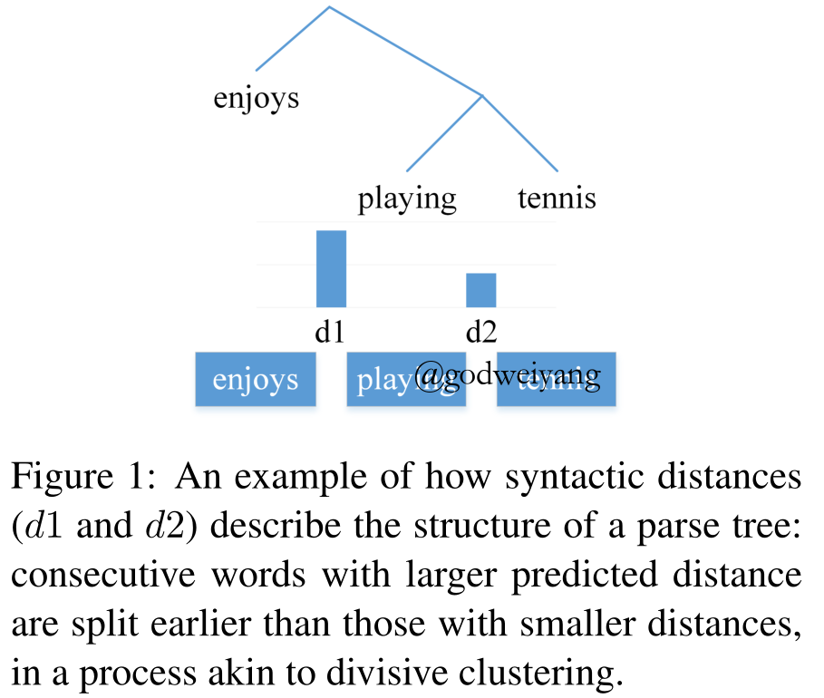
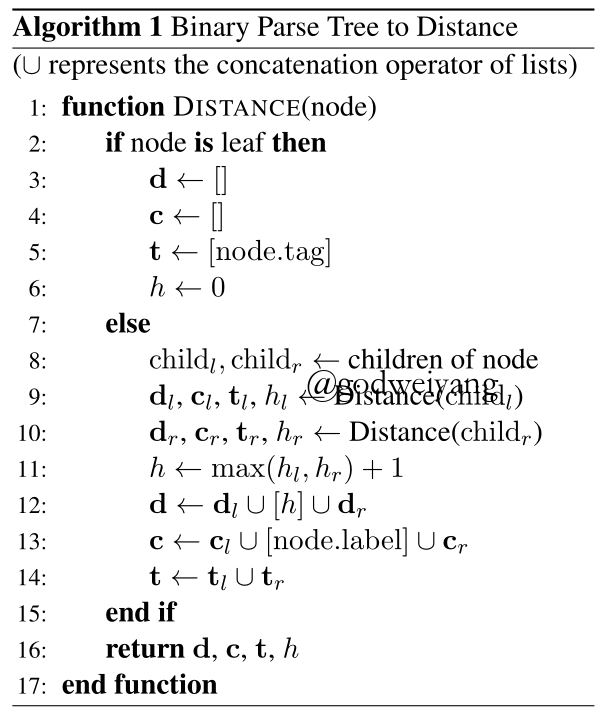
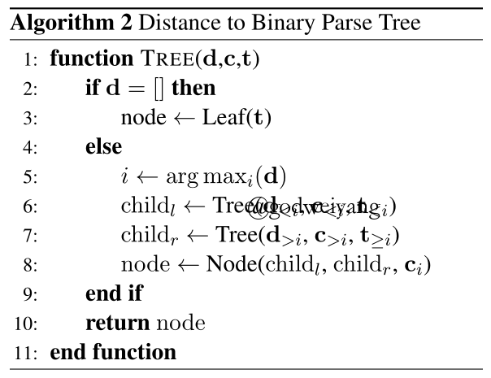
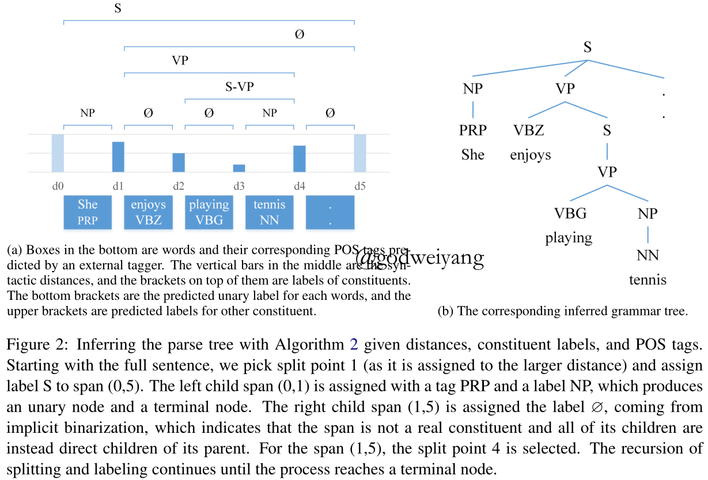
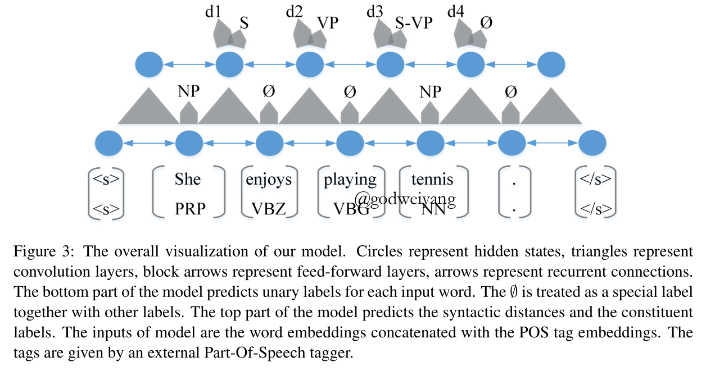
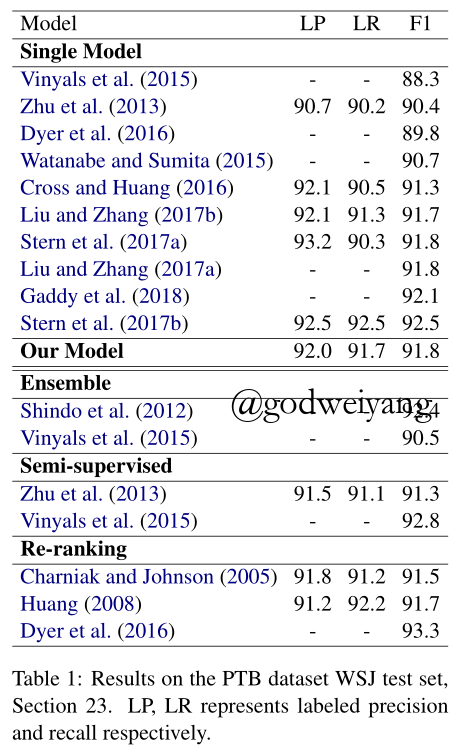
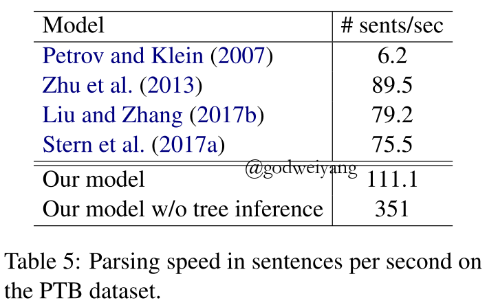

论文地址：Straight to the Tree: Constituency Parsing with Neural Syntactic Distance
摘要
今天要讲的这篇论文发表在ACL18上面，一句话概括，本文就是将句法树序列化，通过预测序列进行句法分析。
主要思想是通过预测一个实值向量来构造出成分句法树，该实值向量表示的就是成分句法树的所有split，并且按照中序遍历给出，具体细节之后会讲到。这个方法之前没有见过，很有新意，效果也很不错，虽然比不上之前讲的基于span的方法，但是该模型最大的优点就是可以并行，时间复杂度低。
近些年来，成分句法分析模型大多是通过学习出词和短语的表示，然后用基于转移的或者基于chart的方法进行句法分析，亦或者是上一篇笔记中提到的top-down方法。但是这一类方法都有一些不可避免的缺点，比如基于转移的方法，通过预测转移序列来生成句法分析树，但是一棵句法分析树可能对应着多棵不同的转移序列，所以训练的时候可能产生错误，可以通过动态Oracle技术解决。基于chart的模型缺点就是速度太慢。
本文提出了一种新的概念叫做“syntactic distance”，以下称作句法距离，这个概念首次提出是2017年一篇语言模型的论文中的，本文将其用在了句法分析中。主要思想是这样的：对于一棵二叉树，它的中序遍历的split序列和二叉树是唯一对应的，所以只需要预测这个split序列就行了，而每个split就是用句法距离来表示。下图就是一棵句法树对应的句法距离：

这棵树有两个split，第一个split的高度更高，所以对应的句法距离数值更大。
最后通过top-down顺序进行解码，解码时间复杂度为$O(n\log n)$。最后模型在PTB上取得了91.8的F1值，CTB上取得了86.5的F1值。
Syntactic Distances
一棵句法树的句法距离如下定义：
对于句法分析树$T$，它的叶子结点也就是句子为$({w_0}, \ldots ,{w_n})$，记叶子结点$w_i,w_j$的最近公共祖先LCA为$\tilde d_j^i$，那么句法树$T$的句法距离定义为任意向量$d = ({d_1}, \ldots ,{d_n})$，并且满足
\[sign({d_i} - {d_j}) = sign(\tilde d_i^{i - 1} - \tilde d_j^{j - 1})\]
这个定义可能看起来比较难理解，通俗一点讲就是，$({d_1}, \ldots ,{d_n})$中任意一对元素的大小关系和$(\tilde d_1^0, \ldots ,\tilde d_n^{n - 1})$中下标相同的一对元素的大小关系是完全一样的，也就是说，句法距离大小反映的是一个句子两两相邻元素的LCA的高度大小。
还用上面那张图举个例子，$\tilde d_1^0 = 2,\tilde d_2^1 = 1$，那么它的句法距离$d=(d_1,d_2)$就是满足$d_1>d_2$的任意向量。
这样就可以将一棵句法树唯一对应到一个句法距离的序列，只要预测这个序列就可以得到句法树了，这比预测span集合更加直接。
那么训练的时候如何将句法树转化为句法距离呢？这里只考虑二叉树，下面的算法1给出了伪代码，将句法树转化为三元组$(d,c,t)$。其中$d$是两两相邻的叶子结点的LCA的高度向量，可以证明，这和中序遍历得到的结点顺序完全相同。$c$是与之顺序相同的结点的label向量。$t$是叶子结点从左向右的tag标签向量。

从算法中可以看出，采用自顶向下递归的形式，叶子结点高度为0，不存在句法距离和label。而内结点的高度等于左右儿子高度较大的一个加1，句法距离为左儿子句法距离拼接上自身句法距离再拼接上右儿子句法距离，label也是如此。
那么如果得到了一棵句法树的三元组$(d,c,t)$，如何还原出这棵句法树呢？算法2给出了构造方法，其实类似于之前那篇论文的top-down方法。

原理很简单，只要在每一步寻找$d$中最大的元素，也就是寻找高度最大的内结点，该内结点对应的下标就是句法树的split，然后对左右子树递归解析就行了。时间复杂度只要$O(n\log n)$，而之前的top-down模型时间复杂度为$O(n^2)$。

上图是构造句法树的一个例子，和之前一样，通过$\emptyset$的label隐式的将句法树二叉化了，一元还是处理成新的label。图中的矩形高度就代表了句法距离的大小，可以看出，除了$d_0,d_5$这两个句子开始结束标记的句法距离以外，$d_1$最大，所以句法树的split就是$w_0$和$w_1$，然后对右子树递归分析。
在子树递归过程中，可以并行计算，理论上时间复杂度可以降到$O(\log n)$，但是句子长度过短的话，是否与cpu通讯时间都要大于这个数量级了呢？这个并行的意义还有待商榷。
训练
模型结构
下面的问题就是给出一个句子，如何学习出它的三元组$(d,c,t)$呢？
首先将每个单词的词向量和tag向量拼接作为输入，然后送入一个Bi-LSTM，得到隐含层输出为
\[h_0^w, \ldots ,h_n^w = {\rm{BiLST}}{ {\rm{M}}_w}([e_0^w,e_0^t], \ldots ,[e_n^w,e_n^t])\]
对于每个单词，可能存在一元结点，也可能不存在，不存在的话就标记为$\emptyset$，用一个前馈神经网络和softmax预测每个单词的一元结点：
\[p(c_i^w|w) = {\rm{softmax(FF}}_c^w(h_i^w))\]
为了得到每个split的表示，对两两相邻单词进行卷积：
\[g_1^s, \ldots ,g_n^s = {\rm{CONV(}}h_0^w, \ldots ,h_n^w)\]
注意输出比输入少一个，因为split数量比单词少一个。
然后再将输出通过一层Bi-LSTM，得到最终的split表示：
\[h_1^s, \ldots ,h_n^s = {\rm{BiLST}}{ {\rm{M}}_s}(g_1^s, \ldots ,g_n^s)\]
当然这里也可以选择采用self-attention，详见我的上一篇博客。
最后将输出通过一个两层前馈神经网络，得到每个split的句法距离值：
\[{ {\hat d}_i} = {\rm{F}}{ {\rm{F}}_d}(h_i^s)\]
每个内结点的label同样用一个前馈神经网络和softmax预测：
\[p(c_i^s|w) = {\rm{softmax(FF}}_c^s(h_i^s))\]
损失函数
对于训练样例$\left\{ {\left\langle { {d_k},{c_k},{t_k},{w_k}} \right\rangle } \right\}_{k = 1}^K$，它的损失函数就是$d$和$c$的损失函数之和。
对于$c$，因为用的是softmax预测的，所以直接用交叉熵即可得到损失${L_{ {\rm{label}}}}$。
对于$d$，可以用均方误差：
\[L_{dist}^{mse} = \sum\limits_i { { {({d_i} - { {\hat d}_i})}^2}} \]
然而我们并不在意句法距离的绝对值大小，我们只要它的相对大小是正确的即可，所以均方误差在这里不是很合适，可以换成如下损失函数：
\[L_{dist}^{rank} = \sum\limits_{i,j > i} {\max (0,1 - sign({d_i} - {d_j})({ {\hat d}_i} - { {\hat d}_j}))} \]
最后总的损失函数为：
\[L = {L_{ {\rm{label}}}} + L_{dist}^{rank}\]
下面这张图形象的说明了模型的结构，由下往上，第一层圆圈是单词之间的LSTM，然后每个单词上面的五边形是前馈神经网络用来预测一元label，两个相邻单词之间的三角形是卷积，卷积得到的结果再通过一个LSTM得到split表示，最后每个split上面有两个五边形，一个是前馈神经网络用来预测label，另一个是前馈神经网络用来预测句法距离。

实验
在PTB数据集上的实验结果如下：

可以看出，结果还是很有竞争力的，虽然有很多比本文高的模型，但本文解释了，那是因为他们用了Char-LSTM，用了外部数据，用了半监督方法或者重排序方法。。。目前单模型最高的方法依然是上一篇博客讲的span-based模型。
最后值得一提的是模型的运行速度，之前理论分析时间复杂度非常低，而实际上运行速度的确快了许多，结果如下：

总结
本文最大的创新点就是应用句法距离进行句法分析，并且时间复杂度很低。至于文章题目为什么叫“Straight to the Tree”，文章最后说因为只通过一个最普通的LSTM和卷积就预测出了句法树，所以是很直接的。。。
本文的模型还比较粗糙，我觉得仍然有许多改进之处：
- 可以将LSTM替换为self-attention，因为之前博客讲到了，伯克利的self-attention编码器比LSTM编码器准确率高了1个多的百分点。
- 可以尝试最近新出的词向量模型ELMo，也许会有特别大的提升。
- 加入词级别的Char-LSTM，可能会有一定提升。
- 我觉得split的表示可以更加复杂化一点，而不仅仅是一层卷积+一层LSTM这么简单。